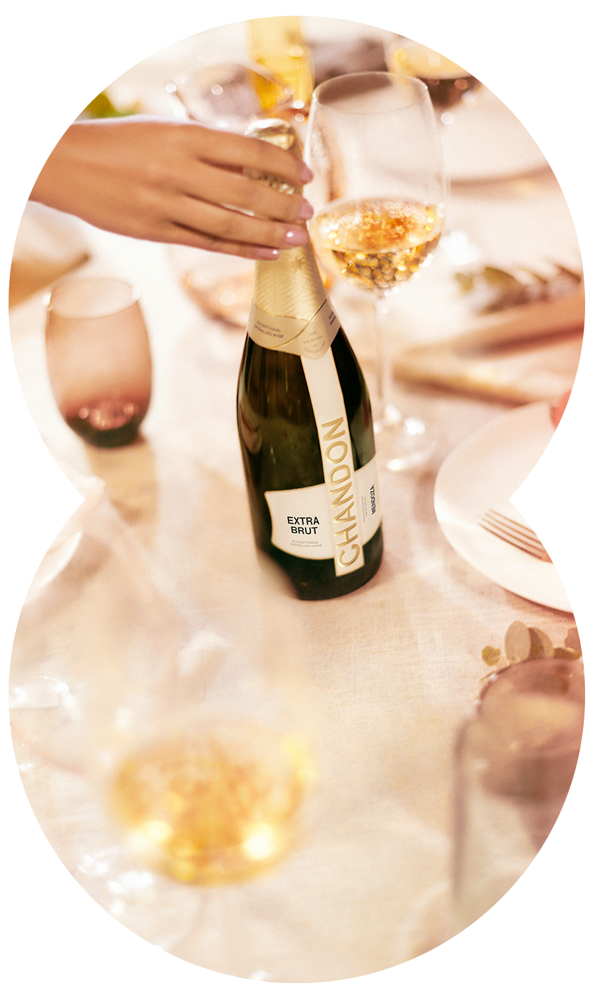

TODOS SON BIENVENIDOS A NUESTRA MESA
Te invitamos a compartir nuestro espíritu de exploración, coraje y deleite.
¡Sumate para descubrir juntos un mundo de posibilidades!

NUEVA IMAGEN, MISMO ESPUMOSO EXCEPCIONAL
Todo comenzó en Argentina, en 1959. Desde entonces, Chandon ha llevado la excelencia en espumosos hasta las tierras más inesperadas, extendiendo su estilo al mundo con bodegas en Brasil, Estados Unidos, Australia, China e India. Ahora, más de sesenta años después, reescribimos nuestra historia una vez más. Firmemente conectados a nuestras raíces pero con la mirada puesta siempre en el horizonte. Nos enorgullece dar a conocer nuestra nueva imagen, tan excepcional como el líquido en su interior, el cual mantiene la calidad de siempre. Alcemos juntos nuestras copas por un nuevo mundo de posibilidades.